شبنم رضاپور
کسی که PDFها را راضی کرد محتوایشان را بیکموکاست لو بدهند.
این جزوه با استفاده از جزوهساز پاپیروس و به صورت خودکار تولید شده است. ممکن است شامل خطا یا برداشت نادرست باشد و نیازمند بررسی و بازبینی مجدد است.
در این درس، روش وسترگرن (Westergren) برای اندازهگیری سرعت رسوب گلبولهای قرمز (ESR)، محدودهٔ طبیعی و کاربردهای آن، علت افزایش سرعت رسوب و محدودیتهای آزمایش بررسی میشود. سپس رنگآمیزی و شمارش رتیکولوسیت، شاخص تولید رتیکولوسیت (RPI)، روش سیانومتهموگلوبین برای اندازهگیری هموگلوبین تام و اندازهگیری هماتوکریت مطرح میشوند.
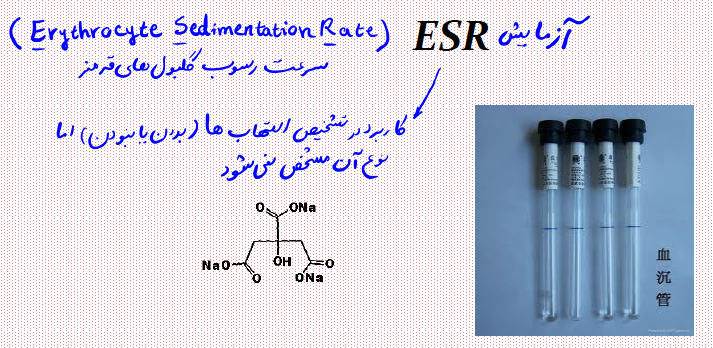
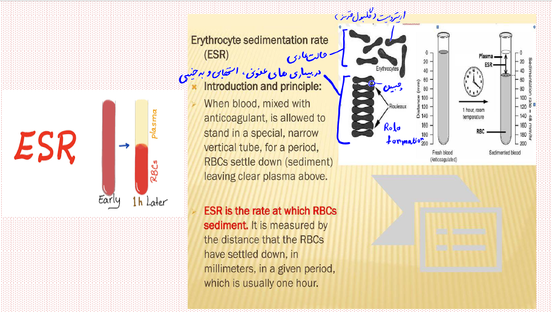
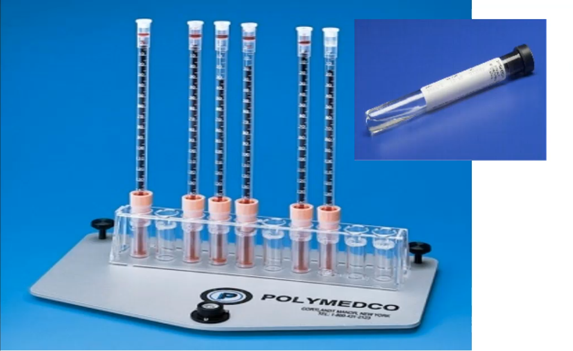
لوله استاندارد این آزمایش لوله های سر مشکی هستند که از ضد انعقاد سیترات سدیم در آن ها استفاده میکنیم؛ اما برای اندازه گیری از لوله هایی شبیه پیپت استفاده میکنیم که به آن پیپت وسترگرن میگویند.
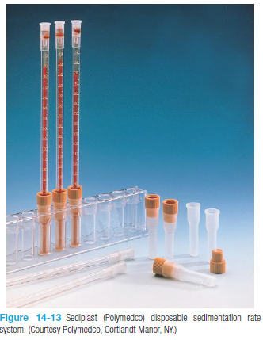
پیپت وسترگرن (Westergren) لولهای شبیه پیپت است که از صفر تا ۲۰۰ میلیمتر درجهبندی شده و قطر داخلی آن ۲٫۵ میلیمتر است. در این روش، خون بیمار با محلول سیترات سدیم 3.2 تا 3.8 درصد ضدانعقاد میشود و تا درجه 0 که بالای پیپت قرار دارد، خون بیمار ریخته میشود و به مدت 60 دقیقه (یک ساعت) به حالت عمودی قرار میدهیم. نسبت خون به سیترات چهار به یک است؛ یعنی چهار قسمت خون و یک قسمت سیترات.
ضدانعقاد این روش EDTA نیست؛ سیترات سدیم ضدانعقاد استاندارد بینالمللی ESR است.
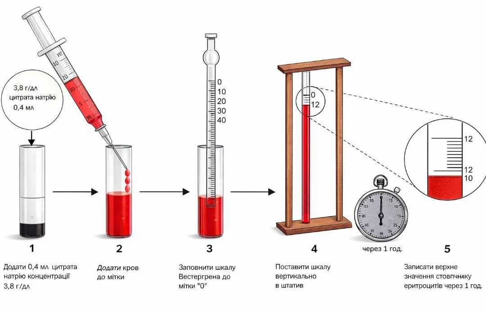
مراحل انجام آزمایش:
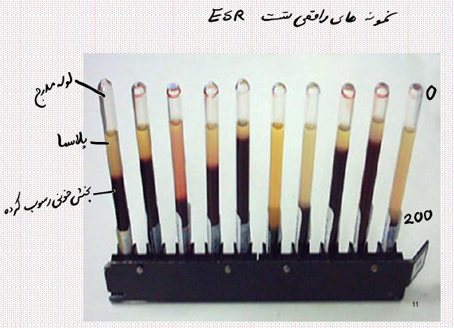
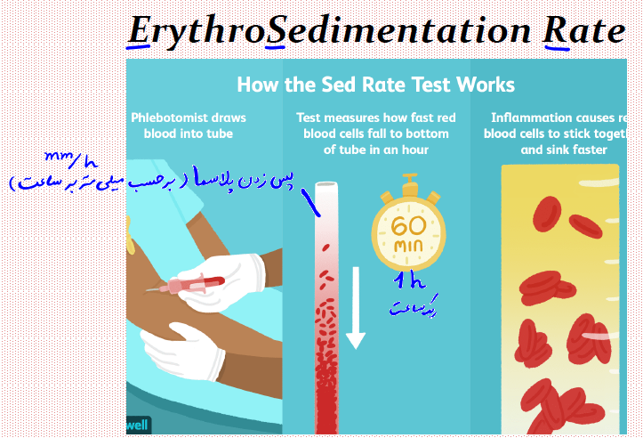
روش وسترگرن روش بینالمللی است و لولهٔ آن استاندارد آزمایش سرعت رسوب محسوب میشود. نتیجه پس از یک ساعت خوانده میشود و آزمایش به اقدام خاص دیگری نیاز ندارد.
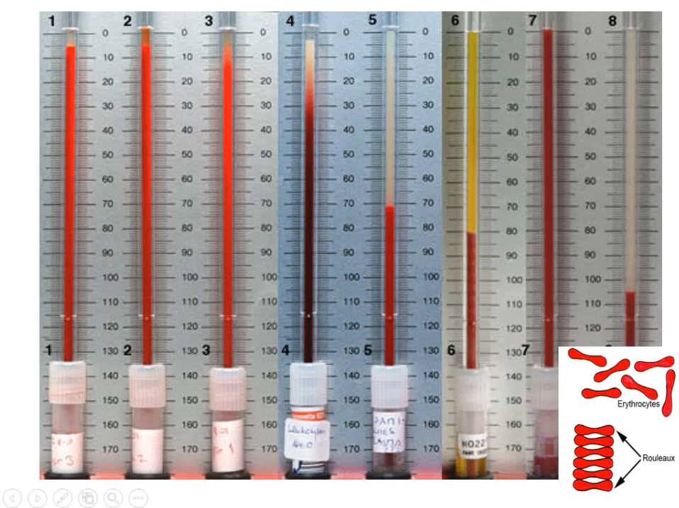
در تصویر هشت بیمار دیده میشوند. در بیمار شمارهٔ ۸، فاصله از صفر تا ۱۰۵ میلیمتر است؛ بنابراین، سرعت رسوب او ۱۰۵ میلیمتر در ساعت و بیشترین مقدار در میان بیماران است. عددهای ثبتشده برای بقیهٔ بیماران بهترتیب حدود ۸۲، ۷۳، ۲۵، ۱۰، ۹ و ۵ هستند.
در توضیح تصویر، بیمار شمارهٔ ۱ طبیعی و بیمارهای شمارهٔ ۵ و ۶ دارای سرعت رسوب بالا معرفی میشوند.
حداکثر مقدار طبیعی سرعت رسوب به سن و جنس بستگی دارد:
آقایان (Male): حداکثر مقدار طبیعی برابر است با سن تقسیم بر دو. 2/Male: Y
برای مثال، در آقای ۴۰ساله حداکثر مقدار طبیعی ۲۰ میلیمتر در ساعت است.
خانمها (Female): حداکثر مقدار طبیعی برابر است با سن بهاضافهٔ ۱۰، تقسیم بر دو. Female: Y+10/2
برای مثال، در خانم ۲۰ساله: ((۲۰ + ۱۰) ÷ ۲ = ۱۵).
کودکان (Children): مقدار طبیعی صفر تا ۱۰ است.
Children: 0-10
| گروه | حداکثر یا محدودهٔ طبیعی ذکرشده |
|---|---|
| آقایان | سن تقسیم بر دو |
| خانمها | (سن بهاضافهٔ ۱۰) تقسیم بر دو |
| کودکان | صفر تا ۱۰ |
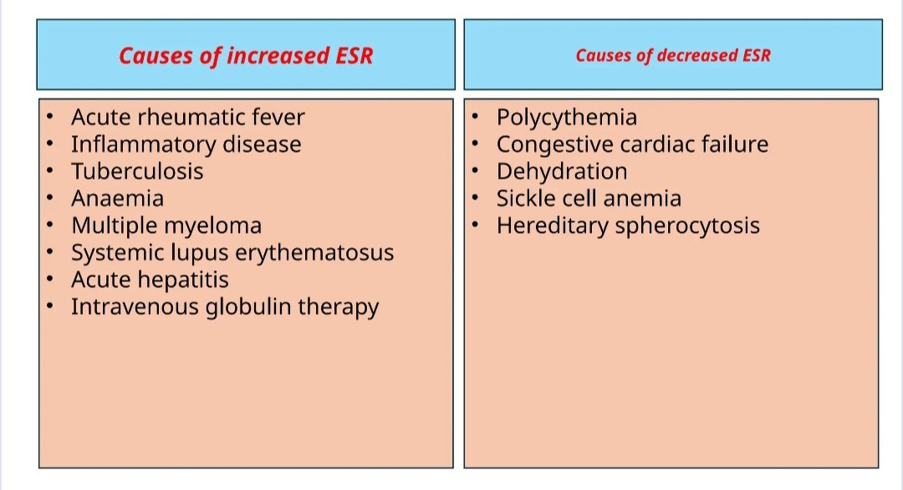
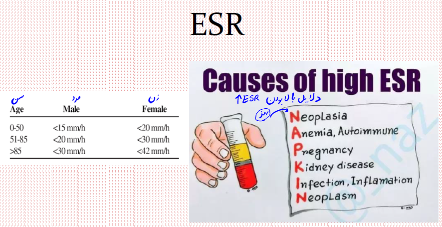
اگر سرعت رسوب دو یا سه برابر شود، معمولاً وجود یک مشکل واقعی در بیمار مطرح است؛ ازجمله:
در این وضعیت، گلبولهای قرمز سریعتر به پایین لوله میآیند(افزایش سرعت رسوب یا ESR)
این آزمایش را سالها «آزمایش دروغسنج پزشکی» مینامیدند و حدود ۱۰۰ سال است که انجام میشود؛ زیرا در این آزمایش وجود واقعی مشکل یا عفونت در بدن اثبات میشود.
مشکل بیمار دارای سرعت رسوب بالا ممکن است عفونت، بیماری روماتیسمی یا بدخیمی باشد.
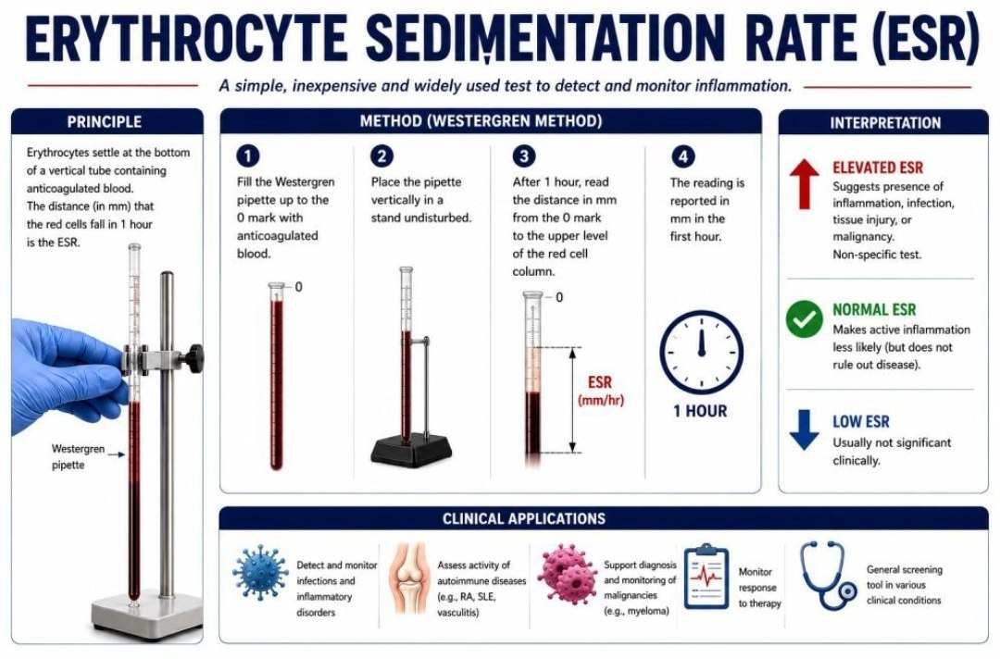
اگر بررسیها نشان دهند که بیمار سل یا آرتریت روماتوئید دارد، پزشک میداند که نباید بیمار را رها کند و باید آزمایشهای تکمیلی انجام دهد. در بیماریای مانند سل، میتوان سرعت رسوب را هر ماه یا هر دو هفته پیگیری کرد.
در بیماریای مانند لنفوم(سرطان غدد لنفاوی) نیز میتوان سرعت رسوب را پیش و پس از درمان مقایسه کرد؛ اگر عدد از ۵۰ به ۷۰ برسد، ممکن است درمان پاسخ نداده باشد. بنابراین، این آزمایش به پیگیری بیمار و ارزیابی پاسخ به دارو کمک میکند.
| کاربرد سرعت رسوب | توضیح و نمونهٔ ذکرشده |
|---|---|
| مطرحکردن وجود یک مشکل | افزایش دو یا سهبرابری معمولاً وجود مشکلی مانند بیماری التهابی یا روماتیسمی، عفونت حاد یا مزمن، یا احتمال بدخیمی را مطرح میکند. |
| علامت هشدار و جستوجوی علت | عدد بالا همراه با علائمی مانند تعریق شبانه یا درد استخوان ممکن است به بررسیهای عفونی، روماتیسمی یا بدخیمی منجر شود. |
| پیگیری بیماری و ارزیابی پاسخ به درمان | در سل میتوان آن را هر ماه یا هر دو هفته پیگیری کرد؛ در لنفوم نیز میتوان عدد را پیش و پس از درمان مقایسه کرد. |
برای فهمیدن علت افزایش سرعت رسوب، باید به واسطههای التهابی توجه کرد. هنگام مواجههٔ بدن با بیماریهای روماتیسمی، عفونت یا التهاب، واسطههای التهابی ترشح میشوند:
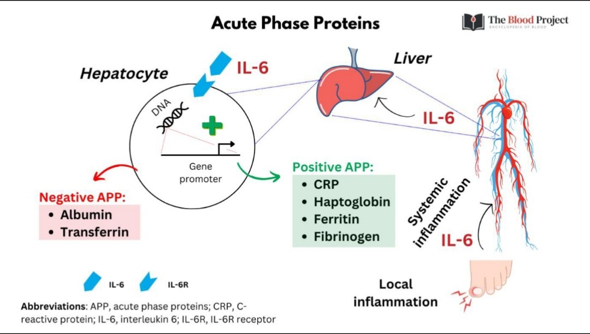
اینترلوکین ۱ و اینترلوکین ۶ پیامرسانهای بدن در عفونت و التهاباند. هنگام کرونا نیز افزایش اینترلوکین ۶ میتوانست بدن را وارد التهاب کند و داروهای مورد استفاده این واسطههای التهابی را کاهش میدادند.
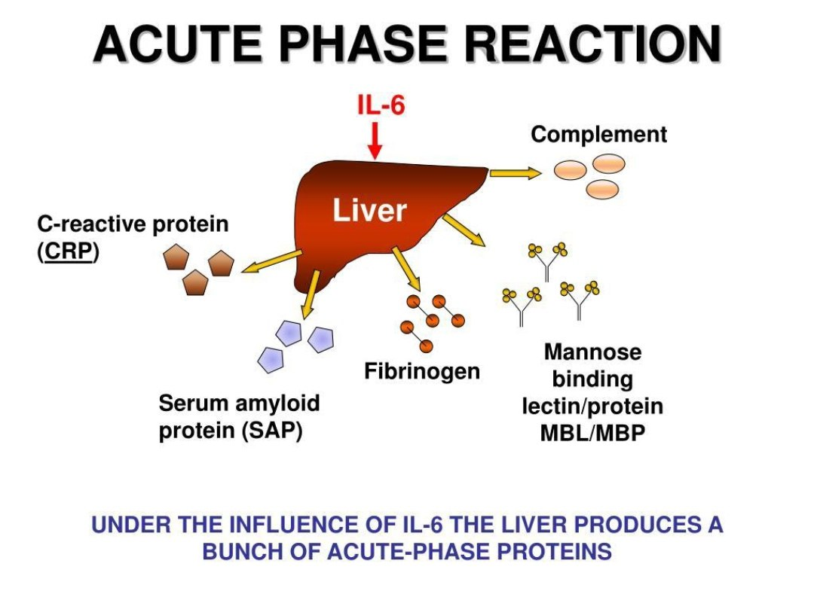
در عفونت یا التهاب، مقدار اینترلوکین ۶ افزایش مییابد و بهسرعت به کبد پیام میدهد که بدن در حالت التهاب است. کبد در حالت عادی آلبومین و ترانسفرین میسازد؛ اما هنگام التهاب، سنتز آلبومین و ترانسفرین را کاهش میدهد و پروتئینهایی میسازد که در پاسخ به التهاب به کار میآیند،
ازجمله:
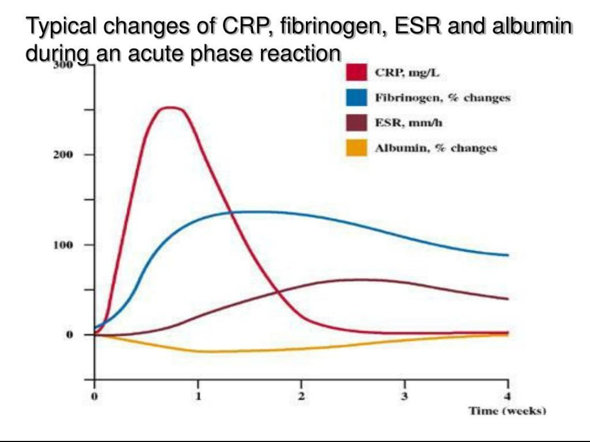
به این پروتئین ها، پروتئین های فاز حاد (Acute phase Proteins) گفته میشود.
پلاسماسلها نیز ایمونوگلوبولین(Ig) ترشح میکنند.
اینترلوکین ۱ روی هیپوتالاموس اثر میگذارد و دمای بدن را بالا میبرد(ایجاد تب). در دمای بالاتر، پاسخ ایمنی بدن فعالتر میشود.
| عامل یا سلول | نقش یا ارتباط ذکرشده |
|---|---|
| ماکروفاژها | ترشح اینترلوکین ۱ (interleukin-1) یا IL-1 |
| بسیاری از سلولها | ترشح اینترلوکین ۶ (interleukin-6) یا IL-6 |
| اینترلوکین ۶ | در التهاب افزایش مییابد و بهسرعت به کبد پیام میدهد که بدن در حالت التهاب است. |
| کبد در حالت عادی | ساخت آلبومین و ترانسفرین |
| کبد هنگام التهاب | کاهش سنتز آلبومین و ترانسفرین و ساخت پروتئینهایی مانند فیبرینوژن، آنتیتریپسین و CRP |
| پلاسماسلها | ترشح ایمونوگلوبولین |
| اینترلوکین ۱ | اثر بر هیپوتالاموس و بالا بردن دمای بدن |
در فرد سالم CRP قابل اندازهگیری نیست؛ اگر CRP در آزمایشگاه مثبت باشد، حتماً التهابی وجود دارد. بنابراین، CRP، فیبرینوژن و آنتیتریپسین در پاسخ به التهاب و بیماری ترشح میشوند.
این پروتئینهای فاز حاد بار منفی گلبولهای قرمز را کاهش میدهند. گلبولهای قرمز در حالت عادی بهدلیل بار منفی از هم جدا میمانند؛ اما با کاهش این بار، به هم میچسبند و به شکل ستون سکه درمیآیند. این آرایش را رولو (rouleaux) میگویند.
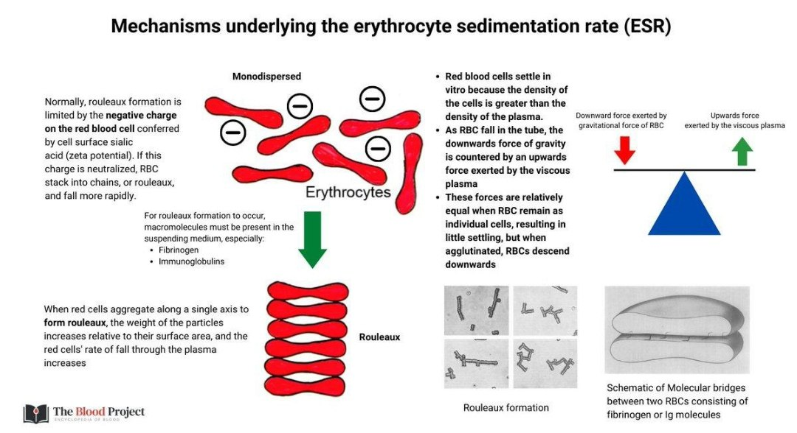
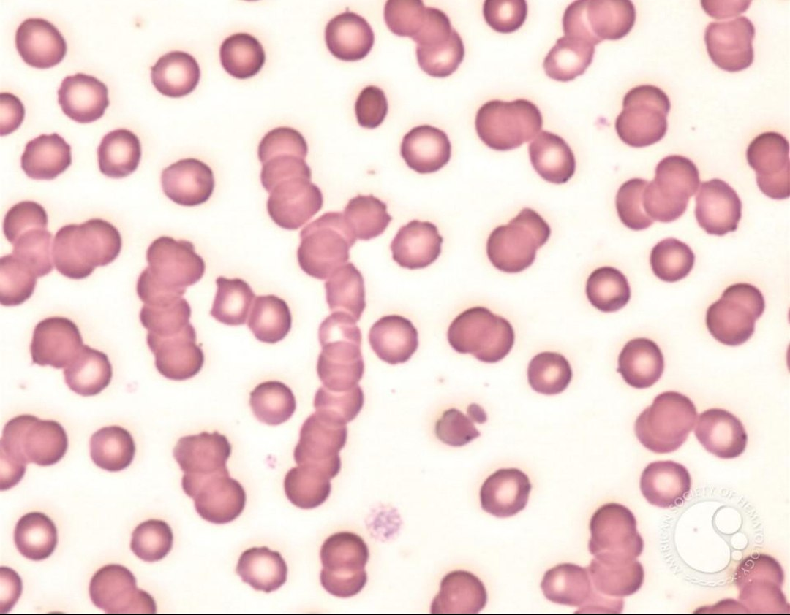
در فرد سالم گلبولها جدا از هماند، اما در خون بیماری که التهاب یا عفونت دارد ممکن است به شکل رولو کنار هم قرار گیرند.
رولو از گلبولهای جداگانه سنگینتر است و سریعتر پایین میآید.
بنابراین، هرچه پروتئینهای فاز حاد بیشتر باشند، رولو بیشتر تشکیل میشود و سرعت رسوب بالاتر میرود.
سرعت رسوب سه فاز دارد:
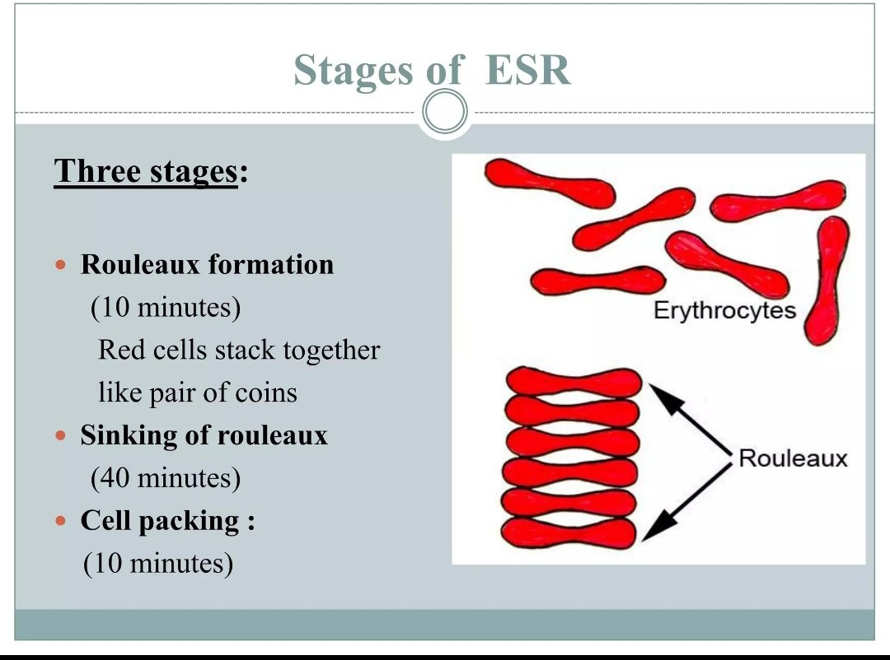
این مراحل در مجموع یک ساعت طول میکشند و به همین دلیل نتیجه پس از یک ساعت خوانده میشود. در مثالی که لوله را نیم ساعت گذاشتهاند، عدد ۱۵ دیده میشود؛ اما نتیجهٔ استاندارد سرعت رسوب برحسب یک ساعت گزارش میشود.
| فاز | زمان | اتفاق |
|---|---|---|
| تشکیل رولو (aggregation) | ۱۰ دقیقهٔ اول | رولو تشکیل میشود. |
| رسوبکردن (sedimentation) | ۴۰ دقیقهٔ بعد | رولوها پایین میروند و سرعت رسوب افزایش پیدا میکند. |
| فشردهشدن (packing) | ۱۰ دقیقهٔ آخر | گلبولها فشرده میشوند و سرعت دیگر چندان افزایش نمییابد. |
سرعت رسوب در بیماریهای مختلف ممکن است افزایش پیدا کند؛ بااینحال، آزمایش محدودیتهایی دارد و باید شرایط انجام آن رعایت شود.
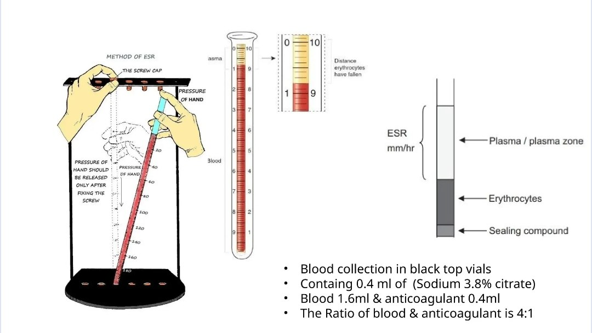
| شرط فنی | مقدار یا وضعیت لازم | پیامد یا توضیح ذکرشده |
|---|---|---|
| وضعیت رک و لوله | کاملاً عمودی | انحراف ۳ درجهای میتواند سرعت رسوب را ۳۰ درصد افزایش دهد و عدد را کاذباً بالا ببرد. |
| وضعیت نمونه | بدون لخته یا همولیز | وجود لخته یا همولیز از شرایط پذیرفتهشدهٔ آزمایش خارج است. |
| ستون خون | بدون حباب هوا | خون نباید طوری وارد لوله شود که حباب ایجاد شود. |
| محل انجام | میز بدون لرزش | لرزش، گلبولهای قرمز را تکان میدهد و مانع رسوب درست آنها میشود. |
| دما | ۱۸ تا ۲۵ درجهٔ سانتیگراد؛ دمای اتاق حدود ۲۴ درجه | گرما سرعت رسوب را بالا میبرد؛ آزمایش نباید در گرما انجام شود. |
| نسبت ضدانعقاد | یک به چهار؛ مقدار ضدانعقاد نباید تغییر کند | نسبت باید دقیقاً حفظ شود. |
آزمایش سرعت رسوب باید حداکثر ظرف دو ساعت پس از خونگیری انجام شود. اگر انجام آزمایش ممکن نباشد، خون را میتوان برای مدت محدودی در یخچال نگه داشت؛ حدود دو تا سه ساعت. سپس باید نمونه را از یخچال بیرون آورد، به دمای اتاق رساند، مخلوط کرد و آزمایش را انجام داد.
رعایت این موارد برای گزارش نتیجهٔ درست به بیمار ضروری است.
لولهٔ وسترگرن براساس استانداردهای کمیتهٔ روماتولوژی ساخته شده است، چون پزشکان روماتولوژی بیشتر برای بیماریهای روماتیسمی سرعت رسوب را درخواست میکنند. بعضی آزمایشگاهها از روش دستی و بعضی از روش اتوماتیک استفاده میکنند.
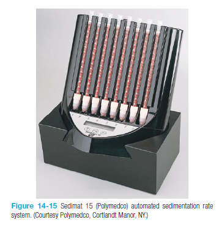
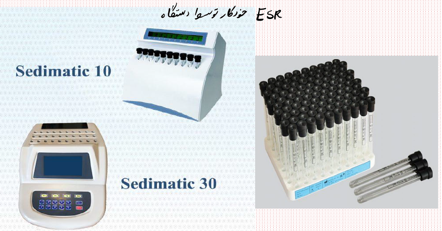
در روش اتوماتیک، تغییراتی در لولهٔ وسترگرن دادهاند؛ برای مثال، قطر آن را بیشتر کردهاند تا نتیجه بهجای یک ساعت، در ۲۰ دقیقه خوانده شود. قطر لوله و حجم خون را تغییر دادهاند تا نتیجهٔ ۲۰دقیقهای معادل نتیجهٔ یکساعته شود. بااینحال، باید روش اتوماتیک را با روش دستی مقایسه و کنترل کنند تا مشخص شود نتیجهٔ ۲۰دقیقهای با روش یکساعتهٔ وسترگرن معادل است یا نه. اگر فاصلهٔ موردنظر در لوله را اندازه بگیریم، حجم خون حدود یک سیسی است.
| ویژگی | روش دستی | روش اتوماتیک |
|---|---|---|
| زمان خواندن نتیجه | یک ساعت در روش وسترگرن | در نمونهٔ تغییریافته، ۲۰ دقیقه |
| تغییر لوله | لولهٔ استاندارد وسترگرن | قطر لوله و حجم خون تغییر داده شده است و قطر لوله را بیشتر کردهاند. |
| مقایسهٔ نتیجه | مبنای مقایسه | باید با روش دستی مقایسه شود تا معادلبودن نتیجهٔ ۲۰دقیقهای با نتیجهٔ یکساعتهٔ وسترگرن مشخص شود. |
کمخونی میتواند سرعت رسوب را افزایش دهد. در کمخونی تعداد گلبولهای قرمز پایین میآید و سرعت رسوب بالا میرود.
هنگام گزارش برای پزشک مینویسیم که چون بیمار کمخون است، افزایش سرعت رسوب ممکن است بهعلت کمخونی باشد و بهتر است از CRP استفاده شود.
برای افزایش سرعت رسوب، گلبولها باید بتوانند به شکل ستون سکه روی هم قرار بگیرند. اگر مورفولوژی گلبولها تغییر کرده باشد، این آرایش ممکن است مختل شود:
در آنمی داسیشکل، اسفروسیتوز و مواردی که poikilocytosis دارند، ESR آزمایش خوبی نیست.
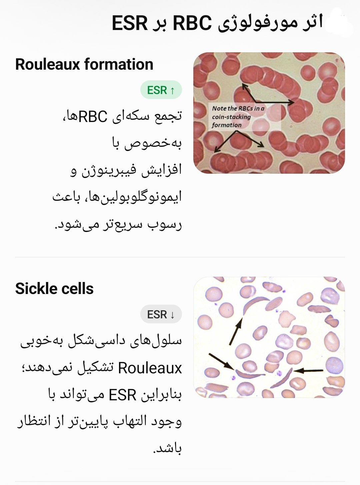
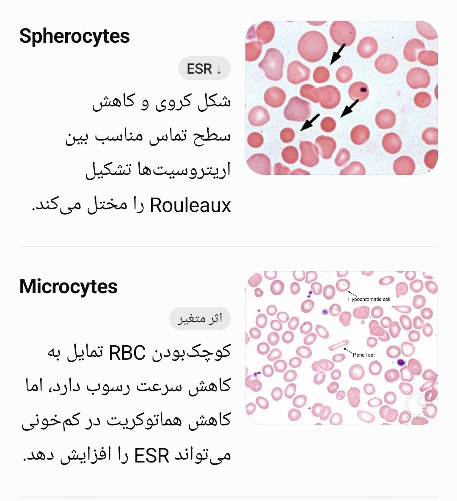
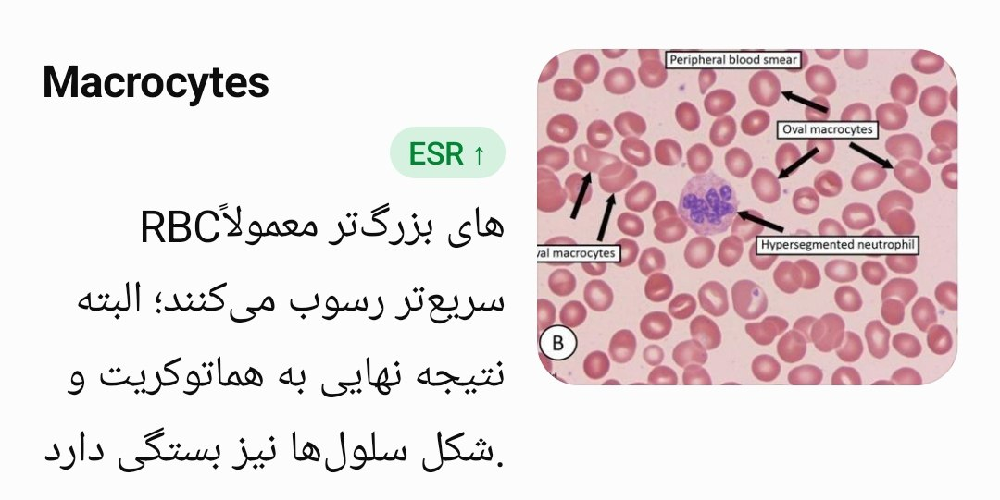
| وضعیت | اثر بر رولو یا تفسیر ESR |
|---|---|
| کمخونی | تعداد گلبولهای قرمز پایین میآید و سرعت رسوب بالا میرود؛ هنگام گزارش باید احتمال اثر کمخونی را ذکر کرد و استفاده از CRP را پیشنهاد کرد. |
| آنمی داسیشکل | گلبولهای داسی نمیتوانند به شکل رولو روی هم قرار بگیرند. |
| گلبول کروی | بهآسانی روی گلبول کروی دیگر نمیخوابد. |
| اسفروسیتوز و پویکیلوسیتوز | تغییر شکل گلبولها ممکن است آرایش رولو را مختل کند و سرعت رسوب پاسخ مناسبی ندهد. |
| آنمی داسیشکل، اسفروسیتوز و poikilocytosis | ESR آزمایش خوبی نیست. |
سرعت رسوب در خانم باردار ارزش محدودی دارد، چون خون رقیق میشود تا خونرسانی به جنین انجام شود و درنتیجه سرعت رسوب بالا میرود، حتی اگر بیماری وجود نداشته باشد. همچنین ممکن است سرعت رسوب تا حدود یک ماه پس از زایمان بالا بماند؛ بنابراین، آن را در خانم باردار آزمایش معتبری نمیدانیم.
گاهی سرعت رسوب جنبهٔ اورژانسی پیدا میکند و اگر آزمایش دیر انجام شود، بیمار ممکن است بینایی خود را از دست بدهد. دو بیماری روماتیسمی مهم در این زمینه التهاب عروق یا التهاب ناحیه گیجگاهی giant cell arteritis یا temporal arteritis و polymyalgia rheumatica هستند.
در temporal arteritis، رگ ناحیهٔ شقیقه دچار التهاب میشود. بیمار ممکن است سردرد ناگهانی و شدید داشته باشد، در بلع دچار مشکل شود و بیناییاش کاهش پیدا کند.
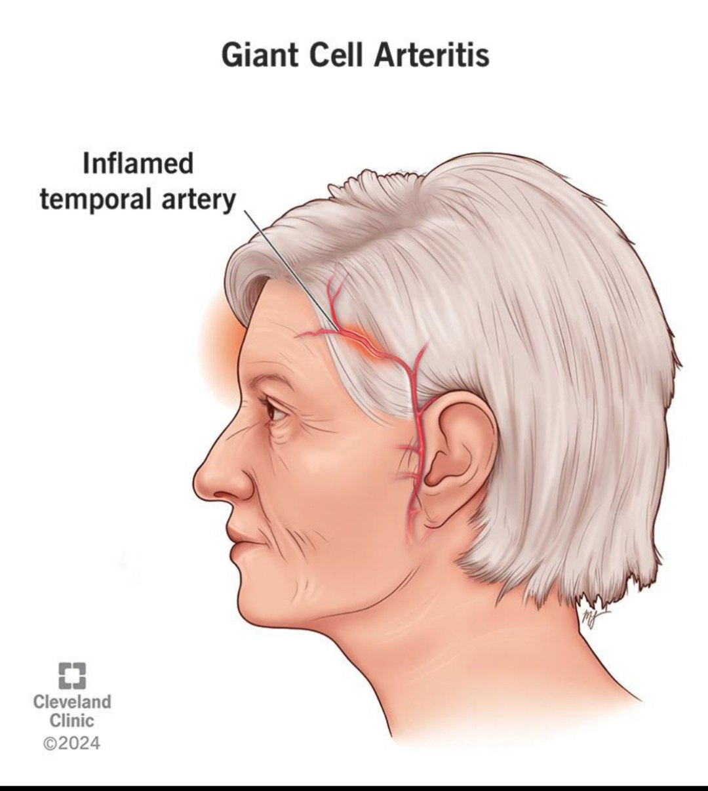
در polymyalgia rheumatica، شانهها بسیار درد میگیرند و ممکن است بینایی هم کاهش یابد. در این دو بیماری سرعت رسوب حتی ممکن است از ۱۰۰ بیشتر شود.
ممکن است از آزمایشگاه بخواهند سرعت رسوب را خیلی فوری انجام دهد، هرچند سرعت رسوب در همهٔ موارد اورژانسی نیست.
| بیماری | ویژگیهای ذکرشده | ارتباط با سرعت رسوب |
|---|---|---|
| giant cell arteritis یا temporal arteritis | التهاب رگ ناحیهٔ شقیقه؛ سردرد ناگهانی و شدید، مشکل در بلع و کاهش بینایی ممکن است دیده شود. | سرعت رسوب ممکن است از ۱۰۰ بیشتر شود. |
| polymyalgia rheumatica | درد بسیار شدید شانهها و احتمال کاهش بینایی | سرعت رسوب ممکن است از ۱۰۰ بیشتر شود. |
CRP ; پروتئین واکنشگر C (C-reactive protein).
فاکتور CRP در پاسخ بدن به التهاب بالا میرود و به پاکسازی باکتریها نیز کمک میکند. وقتی پزشک میخواهد میزان التهاب بدن بیمار را بررسی کند، هم ESR و هم CRP را درخواست میکند.
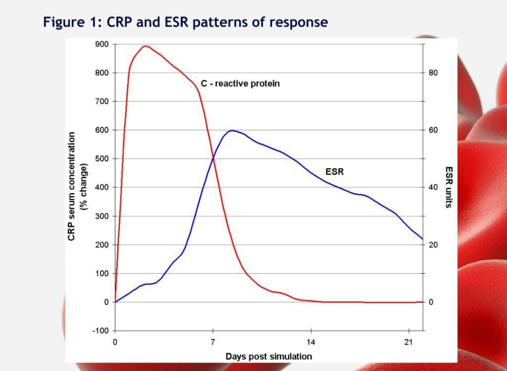
به همین دلیل، برای بیماریهای روماتیسمی مزمن پزشکان بیشتر ESR درخواست میکنند. در بعضی موارد پزشکان بهجای ESR، CRP درخواست میکنند. CRP نیز پروتئین فاز حاد است و افزایش آن وجود التهاب را مطرح میکند، اما ESR همچنان آزمایش رایجی است.
| ویژگی | CRP | ESR |
|---|---|---|
| تغییر در التهاب | در پاسخ به التهاب بالا میرود و به پاکسازی باکتریها نیز کمک میکند. | در بیماریهای مختلف ممکن است افزایش پیدا کند و علامت هشدار برای جستوجوی علت است. |
| زمان تغییر | زود بالا میرود و با بهبود بیمار زود پایین میآید. | دیرتر بالا میرود و دیرتر نیز پایین میآید. |
| کاربرد ذکرشده | گاهی بهجای ESR درخواست میشود؛ در گزارش افزایش ESR در بیمار کمخون نیز استفاده از CRP پیشنهاد شده است. | برای بیماریهای روماتیسمی مزمن بیشتر درخواست میشود و آزمایش رایجی است. |
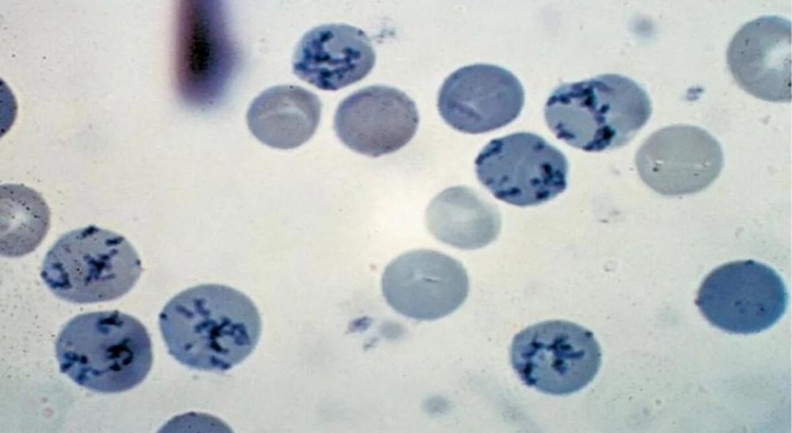
جزوه تئوری و کامل این مباحث را میتوانید در مباحث هماتولوژی مطالعه بفرمایید.
رتیکولوسیتها با رنگ حیاتی(supravital stain) مانند brilliant cresyl blue یا new methylene blue رنگ میشوند و زیر میکروسکوپ بررسی میگردند. برای بیمار کمخون، غلظت خون در تهیهٔ لام باید بیشتر باشد. لام نباید خیلی آبی یا خیلی کمرنگ باشد.
مراحل تهیهٔ لام:
رنگآمیزی حیاتی را supravital stain یا vital stain میگویند و برای شمارش رتیکولوسیت به کار میرود.
برای دیدن سلولها، ابتدا با عدسی ۴۰ میدان مناسب پیدا میکنیم و سپس با عدسی ۱۰۰ و روغن immersion بررسی میکنیم. در این رنگآمیزی، علاوه بر رتیکولوسیت، دو نوع inclusion body دیگر هم ممکن است دیده شود که در درسهای آینده دربارهشان صحبت میشود. یکی شبیه توپ گلف و مربوط به بیماری HbH است و مورد دیگر هاینز بادی نیز در درسهای آینده بررسی خواهد شد. در این رنگآمیزی دنبال این سه مورد میگردیم، اما فعلاً فقط رتیکولوسیت را میشماریم.
واحد رتیکولوسیت کانت (reticulocyte count) درصد است و مقدار طبیعی آن حدود ۰٫۵ تا ۱٫۵ درصد RBCهاست. شمارش رتیکولوسیت مطلق (absolute reticulocyte count) نیز وجود دارد.
برای بهدستآوردن درصد، تعداد رتیکولوسیتها و تعداد کل RBCها را میشماریم. در یک میدان مناسب، RBCها باید از هم فاصله داشته باشند و به هم نچسبیده باشند. در هر میدان حدود ۲۵۰ RBC دیده میشود. رتیکولوسیتها نیز شمرده میشوند؛ برای مثال، اگر در میدانهای مختلف ۲، ۴، ۲ و ۳ رتیکولوسیت دیده باشیم، مجموعاً ۱۱ رتیکولوسیت داریم. اگر در مجموع ۱۰۰۰ RBC شمرده باشیم، درصد رتیکولوسیت ۱٫۱ درصد است:
درصد رتیکولوسیت = تعداد رتیکولوسیتها ÷ تعداد کل RBCها × ۱۰۰
برای دقیقترشدن شمارش، فقط یک میدان را بررسی نمیکنیم و چهار میدان مختلف را میشماریم. بعضی منابع توصیه میکنند برای هر بیمار سه لام تهیه شود تا پاسخ دقیقتر شود.
اگر در چهار میدان مجموعاً حدود ۱۰۰۰ RBC شمرده باشیم:
در صورت نیاز میتوان از فرمول استفاده کرد.
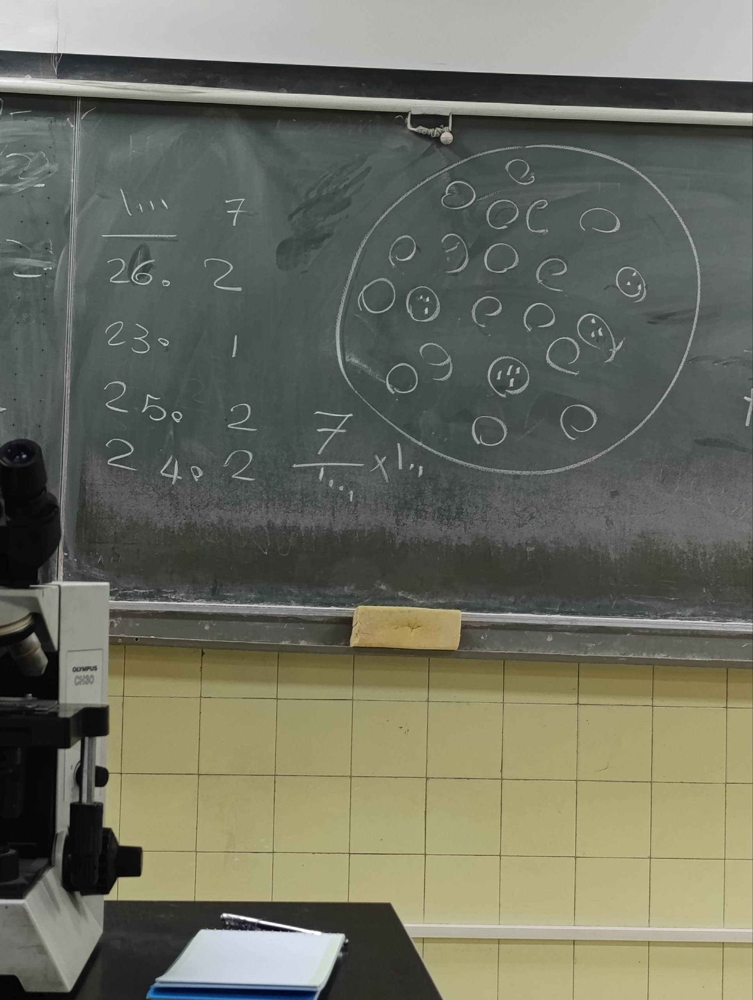
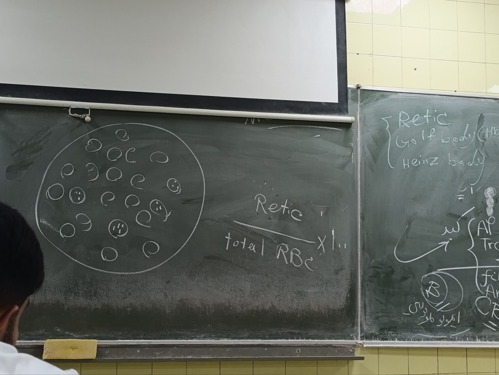
| روش یا مقدار | توضیح |
|---|---|
| reticulocyte count | درصد؛ مقدار طبیعی حدود ۰٫۵ تا ۱٫۵ درصد RBCهاست. |
| absolute reticulocyte count | شمارش مطلق رتیکولوسیتها؛ مثالهای عددی در متن آمده است. |
| شمارش در میدانها | در هر میدان حدود ۲۵۰ RBC دیده میشود؛ برای دقیقترشدن، چهار میدان بررسی میشود. |
| شمارش لامها | بعضی منابع توصیه میکنند برای هر بیمار سه لام تهیه شود. |
شاخص تولید رتیکولوسیت (reticulocyte production index یا RPI) را نیز محاسبه میکنیم. اگر رتیکولوسیت بیمار، برای مثال، ۳ درصد باشد، نمیتوان فقط از روی این عدد نتیجه گرفت که تولید رتیکولوسیت افزایش پیدا کرده است.
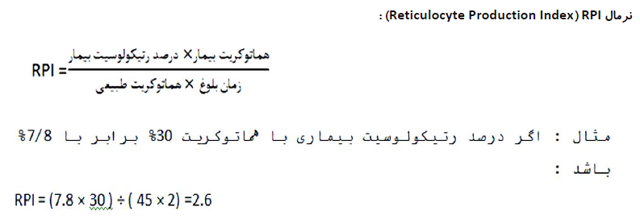
رتیکولوسیت هنگام ساختهشدن حدود دو تا سه روز، یعنی ۴۸ ساعت، در مغز استخوان میماند و سپس وارد خون محیطی میشود؛ بنابراین، رتیکولوسیتی که امروز میبینیم، روز قبل در مغز استخوان بوده است.
اگر فرد بهعلت هر نوع کمخونی، مانند فقر آهن، خونریزی، کمخونی مگالوبلاستیک یا کمخونی همولیتیک خودایمنی یا غیرخودایمنی، کمخون شود، مغز استخوان ممکن است رتیکولوسیت را زودتر از دو روز به خون محیطی بفرستد. در این صورت شمار رتیکولوسیتها در خون بالا میرود، اما لزوماً تولید آنها بیشتر نشده است؛ فقط زودتر از مغز استخوان وارد خون شدهاند. مدت بلوغ در محاسبهٔ RPI در نظر گرفته میشود.
در بیمارانی که هماتوکریت پایین دارند، مثلاً ۳۵، ۳۶، ۳۲، ۳۰ یا ۲۵، محاسبهٔ RPI اهمیت دارد.
از RPI استفاده میکنیم تا ورود زودتر رتیکولوسیتها از مغز استخوان به خون را در نظر بگیریم و مشخص کنیم آیا تولید واقعاً افزایش یافته است یا نه.
RPI بالاتر از ۱، مثلاً ۲ یا بیشتر، میتواند نشاندهندهٔ افزایش تولید باشد؛ حدود ۲ به بالا یعنی تولید دو یا سه برابر شده است. بنابراین، برای بیماران کمخون RPI را محاسبه میکنیم.
| وضعیت یا شاخص | توضیح ذکرشده |
|---|---|
| رتیکولوسیت در مغز استخوان | هنگام ساختهشدن حدود دو تا سه روز، یعنی ۴۸ ساعت، در مغز استخوان میماند و سپس وارد خون محیطی میشود. |
| کمخونی | ممکن است مغز استخوان رتیکولوسیت را زودتر از دو روز به خون بفرستد؛ شمار خون بالا میرود، اما لزوماً تولید بیشتر نشده است. |
| RPI | مدت بلوغ را در نظر میگیرد تا افزایش واقعی تولید از ورود زودتر رتیکولوسیت به خون تفکیک شود. |
| کاربرد در هماتوکریت پایین | برای بیماران کمخون و دارای هماتوکریت پایین محاسبه میشود. |
| RPI بالاتر از ۱ | میتواند نشاندهندهٔ افزایش تولید باشد؛ حدود ۲ به بالا یعنی تولید دو یا سه برابر شده است. |
روش اندازهگیری هموگلوبین تام، روش سیانومتهموگلوبین (cyanmethemoglobin) است. در آزمایشگاهها معمولاً هموگلوبین را با دستگاه اندازه میگیرند، اما گاهی ممکن است لازم باشد از روش دستی استفاده شود.
روش دستی با محلول درابکین (Drabkin) انجام میشود که دو جزء دارد:
هموگلوبین معمولی آهن دوظرفیتی دارد و میتواند با اکسیژن ترکیب شود؛ اما پس از تبدیلشدن به متهموگلوبین دیگر نمیتواند با اکسیژن ترکیب شود. در این روش، با سیانید واکنش میدهد و مادهای رنگی و پایدار تشکیل میشود که با اسپکتروفتومتر (spectrophotometer) خوانده میشود.
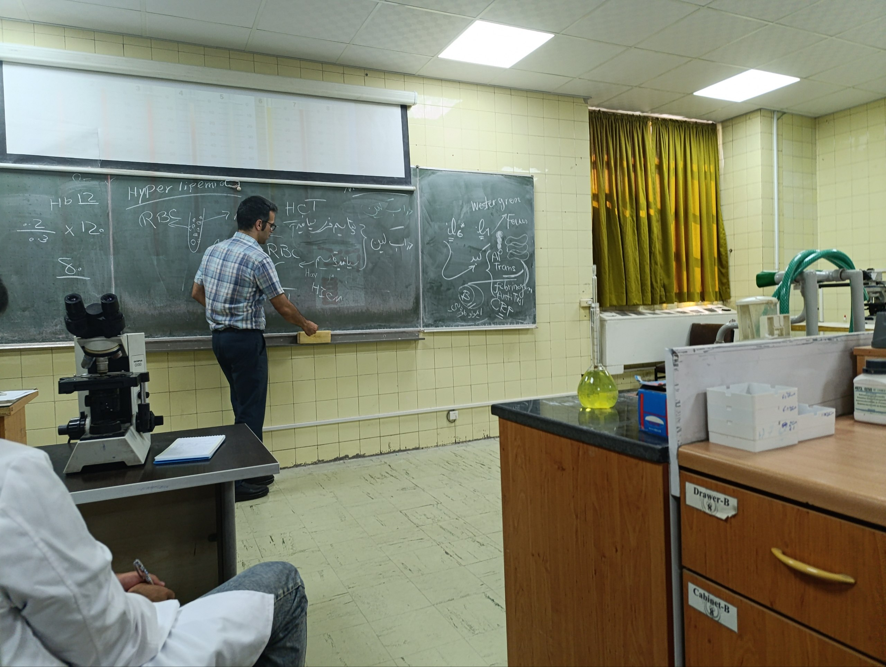
| جزء محلول درابکین | نقش ذکرشده |
|---|---|
| پتاسیم فریسیانید (potassium ferricyanide) | آهن دوظرفیتی هموگلوبین را به آهن سهظرفیتی تبدیل میکند و متهموگلوبین میسازد. |
| پتاسیم سیانید | با متهموگلوبین ترکیب میشود و سیانومتهموگلوبین (HiCN) تشکیل میدهد. |
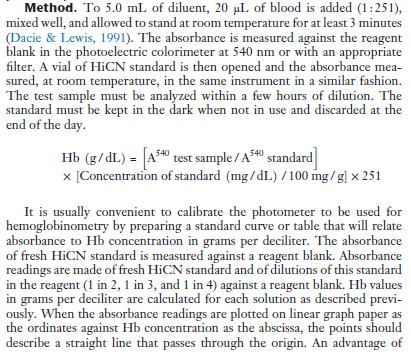
بلانک، خود محلول درابکین است و خون به آن اضافه نمیشود. از کیت استاندارد با عدد مشخص استفاده میکنیم.
محلول سیانید در آزمایشگاه استفاده میشد و روش دستی اندازهگیری هموگلوبین با همین روش انجام میگرفت؛ اما چون سیانید خطرناک است، استفاده از آن محدود شده است.
عوامل مداخله گر و ایجاد کننده نتایج کاذب در اندازه گیری هموگلوبین طبق کتاب هنری دیویدسون 2022 به شرح زیر است:
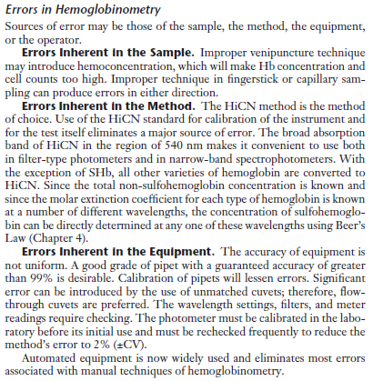
بااینکه این روش امروزه کمتر انجام میشود، دستگاههای سلکانتر نیز ممکن است از عوامل مداخلهگر تأثیر بگیرند.
| مرحله یا جزء روش | مقدار یا توضیح |
|---|---|
| محلول درابکین و خون | ۵ میلیلیتر محلول درابکین با ۲۰ میکرولیتر خون |
| رقت | حدود ۱ به ۲۵۱ |
| زمان انتظار | پنج دقیقه |
| طول موج | ۵۴۰ نانومتر |
| بلانک | خود محلول درابکین، بدون خون |
| خواندن نتیجه | با اسپکتروفتومتر |
| استفاده از روش دستی | استفاده از سیانید محدود شده است، چون سیانید خطرناک است. |
مهمترین عامل مداخلهگر هایپرلیپمی است. اگر تریگلیسرید (TG) بالا باشد، پلاسما شیری و لیپمیک میشود. بعضی بیماران مشکل متابولیک دارند یا ناشتا نبودهاند و غذاهای چرب خوردهاند؛ ممکن است مقدار TG بسیار بالا باشد، مثلاً ۳۰۰ یا حتی ۳۳ هزار.
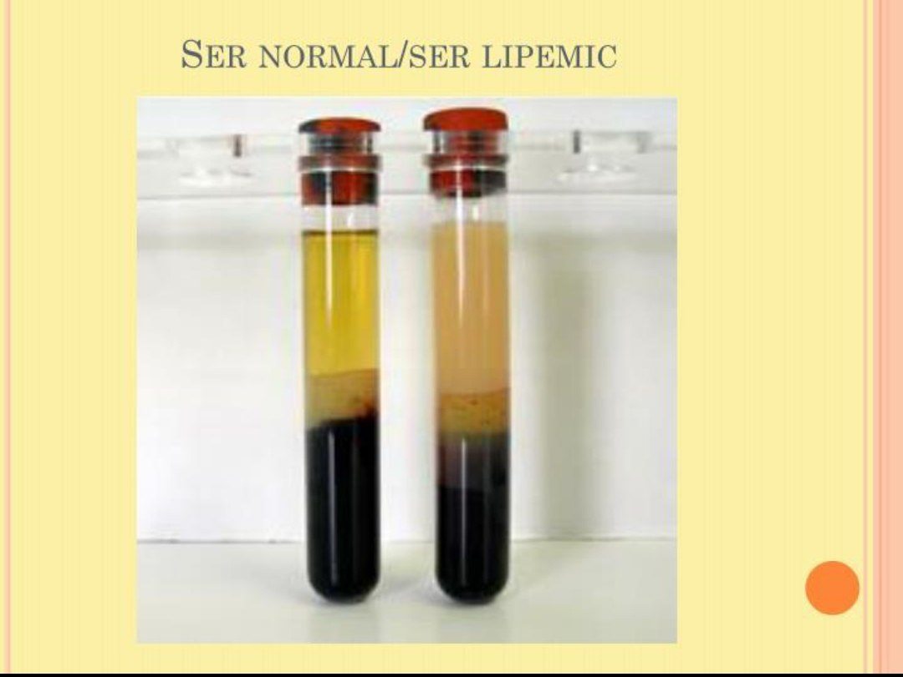
اگر در بخش بیوشیمی متوجه بالا بودن TG بیمار شوید، ممکن است لازم باشد به بخش هماتولوژی اطلاع دهید تا در تفسیر هموگلوبین دقت کنند. هر چیزی که رنگ را تغییر دهد، جذب نوری را نیز تغییر میدهد و میتواند هموگلوبین را بهطور کاذب بالا نشان دهد.
برای آمادگی بیشتر جهت امتحان(طبق گفته استاد امتحان طبق رفرنس هنری طرح خواهد شد) و مطالعه کامل تر توصیه میشود مبحث هموگلوبینوسایتومتری در کتاب هنری دیویدسون که در بخش زیر آورده شده را مطالعه بفرمایید:
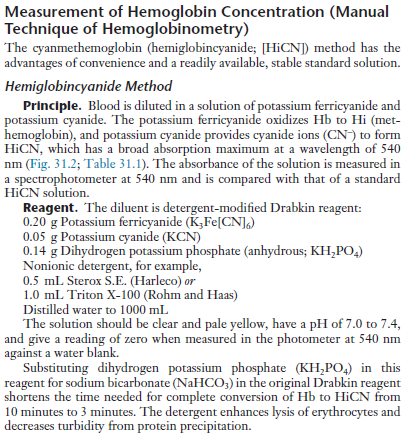
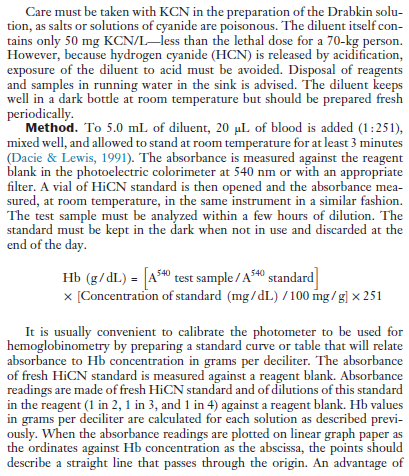
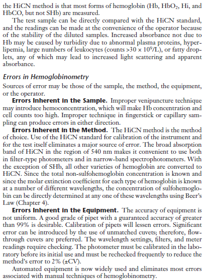
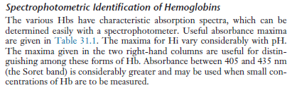
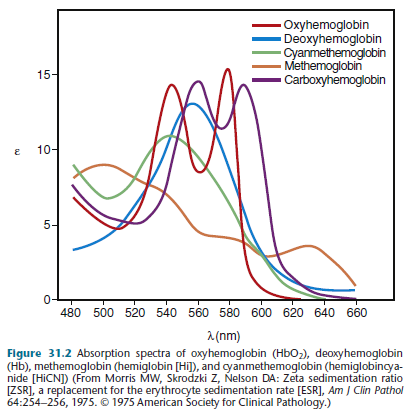
| عامل یا وضعیت | اثر ذکرشده |
|---|---|
| هایپرلیپمی و TG بالا | پلاسما شیری و لیپمیک میشود. |
| تغییر رنگ نمونه | جذب نوری را تغییر میدهد و میتواند هموگلوبین را بهطور کاذب بالا نشان دهد. |
| عوامل مداخلهگر ذکرشده در Henry Davidson | ممکن است هموگلوبین را بهصورت کاذب بالا یا پایین ببرند. |
آخرین تست، هماتوکریت است که packed cell volume نیز نامیده میشود.
خون را در لولهٔ موئینه سانتریفیوژ میکنیم؛ بخشی از حجم را RBCها و بخشی را پلاسما تشکیل میدهد. نسبت حجم RBCها به کل خون را با خطکش اندازه میگیریم و در ۱۰۰ ضرب میکنیم. واحد هماتوکریت درصد است و مقدار طبیعی آن حدود ۴۵ درصد است. هماتوکریت ممکن است در کمخونی پایین بیاید، چون حجم RBCها کم شده است.
نحوه خواندن و گزارش هماتوکریت در فیلم این جلسه در کانال آرشیو در دسترس میباشد.
| ویژگی | شرح |
|---|---|
| نام دیگر | packed cell volume |
| تعریف | نسبت حجم RBCها به کل حجم خون |
| روش اندازهگیری ذکرشده | سانتریفیوژ خون در لولهٔ موئینه و اندازهگیری نسبت حجم RBCها به کل خون با خطکش |
| محاسبه | نسبت اندازهگیریشده در ۱۰۰ ضرب میشود. |
| واحد | درصد |
| مقدار طبیعی ذکرشده | حدود ۴۵ درصد |
| ارتباط با کمخونی | ممکن است پایین بیاید، چون حجم RBCها کم شده است. |
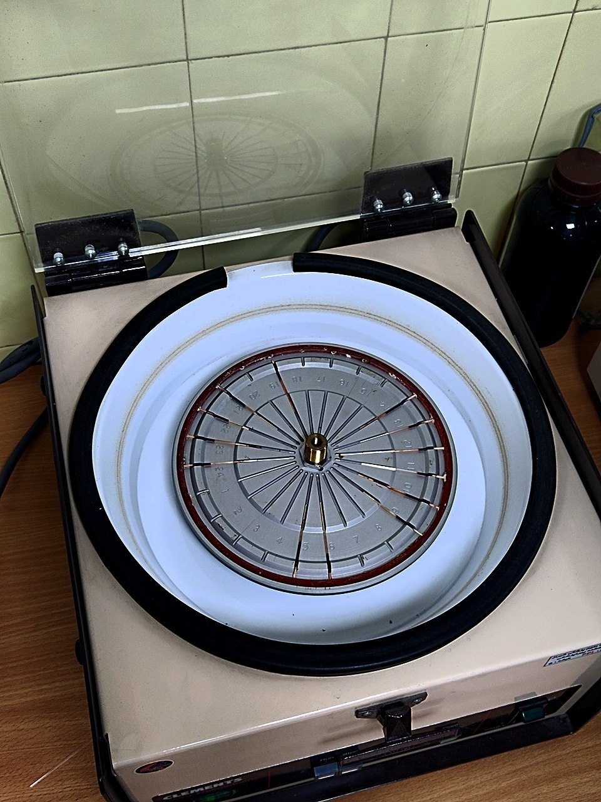
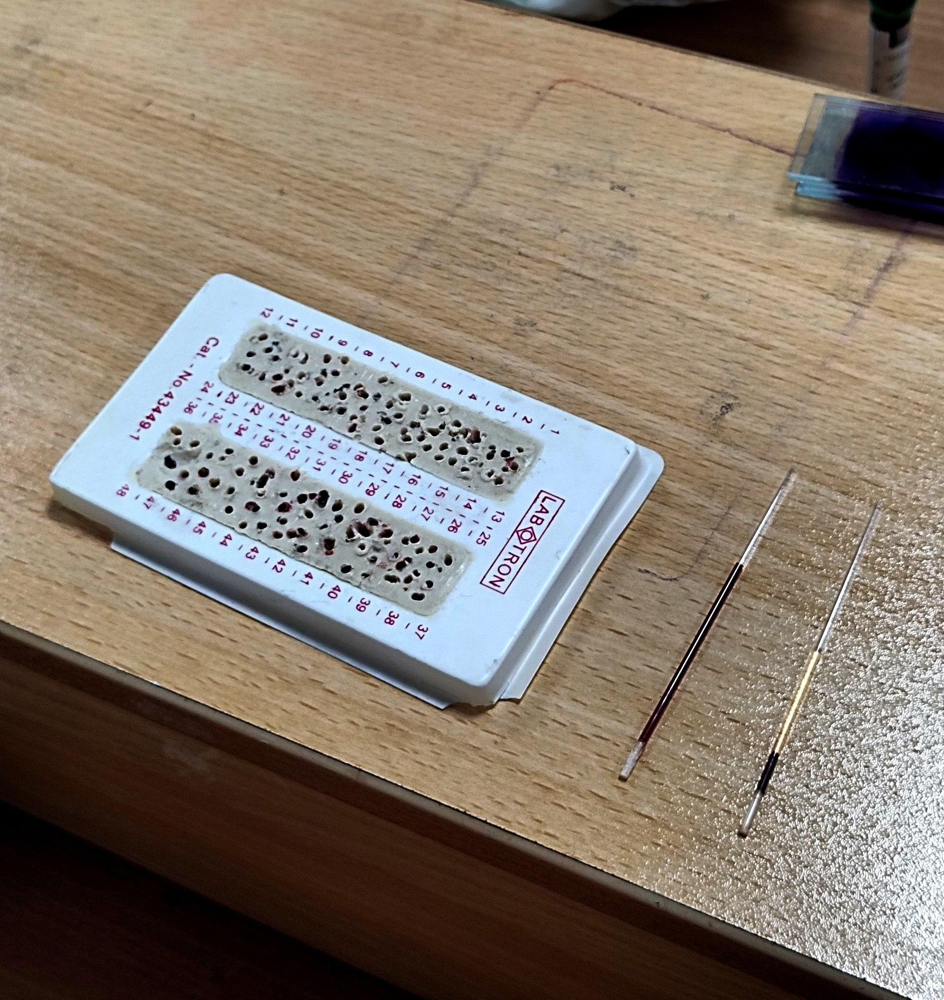
| موضوع | اطلاعات |
|---|---|
| آقایان | حداکثر مقدار طبیعی برابر است با سن تقسیم بر دو؛ برای آقای ۴۰ساله، ۲۰ میلیمتر در ساعت. |
| خانمها | حداکثر مقدار طبیعی برابر است با (سن بهاضافهٔ ۱۰) تقسیم بر دو؛ برای خانم ۲۰ساله، ۱۵. |
| کودکان | مقدار طبیعی صفر تا ۱۰. |
| افزایش دو یا سهبرابری | معمولاً وجود مشکلی واقعی مانند بیماری التهابی یا روماتیسمی، عفونت حاد یا مزمن، یا احتمال بدخیمی را مطرح میکند. |
| پیگیری درمان | در سل، هر ماه یا هر دو هفته قابل پیگیری است؛ در لنفوم نیز میتوان مقدار را پیش و پس از درمان مقایسه کرد. |
| نمونهٔ پاسخ به درمان | کاهش ۱۰۰ به ۷۰ و سپس ۴۰ با بهبود همراه است؛ افزایش ۵۰ به ۷۰ در لنفوم ممکن است نشان دهد درمان پاسخ نداده است. |
| علامت هشدار | افزایش سرعت رسوب همراه با تعریق شبانه یا درد استخوان میتواند به بررسی عفونی، روماتیسمی یا بدخیمی منجر شود. |
| عامل یا سلول | نقش یا ارتباط ذکرشده |
|---|---|
| ماکروفاژها | ترشح اینترلوکین ۱ (interleukin-1) |
| بسیاری از سلولها | ترشح اینترلوکین ۶ (interleukin-6) |
| اینترلوکین ۶ | در التهاب افزایش مییابد و بهسرعت به کبد پیام میدهد که بدن در حالت التهاب است. |
| کبد در حالت عادی | ساخت آلبومین و ترانسفرین |
| کبد هنگام التهاب | کاهش سنتز آلبومین و ترانسفرین و ساخت فیبرینوژن، آنتیتریپسین و CRP |
| پلاسماسلها | ترشح ایمونوگلوبولین |
| اینترلوکین ۱ | اثر بر هیپوتالاموس و بالا بردن دمای بدن |
| موضوع | رابطه یا زمان |
|---|---|
| پروتئینهای فاز حاد | بار منفی گلبولهای قرمز را کاهش میدهند و تشکیل رولو را افزایش میدهند. |
| رولو (rouleaux) | آرایش گلبولهای قرمز به شکل ستون سکه؛ از گلبولهای جداگانه سنگینتر است و سریعتر پایین میآید. |
| افزایش پروتئینهای فاز حاد | تشکیل رولو بیشتر و سرعت رسوب بالاتر میشود. |
| aggregation | ۱۰ دقیقهٔ اول؛ تشکیل رولو |
| sedimentation | ۴۰ دقیقهٔ بعد؛ پایینرفتن رولوها و افزایش سرعت رسوب |
| packing | ۱۰ دقیقهٔ آخر؛ فشردهشدن گلبولها و کاهش افزایش سرعت |
| زمان خواندن استاندارد | مجموع فازها یک ساعت است؛ نتیجه برحسب یک ساعت گزارش میشود. |
| موضوع | وضعیت یا مقدار | پیامد یا توضیح |
|---|---|---|
| رک و لوله | کاملاً عمودی | انحراف ۳ درجهای میتواند سرعت رسوب را ۳۰ درصد افزایش دهد و عدد را کاذباً بالا ببرد. |
| نمونه | بدون لخته یا همولیز | نمونه باید فاقد لخته یا همولیز باشد. |
| ستون خون | بدون حباب هوا | ورود خون نباید موجب تشکیل حباب شود. |
| محل انجام | میز بدون لرزش | لرزش گلبولهای قرمز را تکان میدهد و مانع رسوب درست میشود. |
| دما | ۱۸ تا ۲۵ درجهٔ سانتیگراد؛ دمای اتاق حدود ۲۴ درجه | گرما سرعت رسوب را بالا میبرد. |
| نسبت ضدانعقاد | چهار قسمت خون به یک قسمت سیترات | نسبت و مقدار ضدانعقاد باید دقیقاً حفظ شود. |
| زمان پس از خونگیری | انجام آزمایش حداکثر ظرف دو ساعت | نگهداری در یخچال برای دو تا سه ساعت نیز ذکر شده، اما نسبت دو بازه روشن نیست. |
| روش دستی وسترگرن | لولهٔ استاندارد؛ خواندن پس از یک ساعت | مبنای مقایسه با روش اتوماتیک است. |
| روش اتوماتیک | تغییر قطر لوله و حجم خون؛ خواندن در نمونهٔ تغییریافته پس از ۲۰ دقیقه | باید با روش دستی مقایسه شود تا معادلبودن نتایج مشخص شود. |
| وضعیت | اثر بر رولو یا تفسیر ESR |
|---|---|
| کمخونی | تعداد گلبولهای قرمز پایین میآید و سرعت رسوب بالا میرود؛ در گزارش باید احتمال اثر کمخونی ذکر و استفاده از CRP پیشنهاد شود. |
| آنمی داسیشکل | گلبولهای داسی نمیتوانند به شکل رولو روی هم قرار بگیرند. |
| گلبول کروی | بهآسانی روی گلبول کروی دیگر نمیخوابد. |
| اسفروسیتوز و پویکیلوسیتوز | تغییر شکل گلبولها ممکن است آرایش رولو را مختل کند و سرعت رسوب پاسخ مناسبی ندهد. |
| آنمی داسیشکل، اسفروسیتوز و poikilocytosis | ESR آزمایش خوبی نیست. |
| بارداری | رقیقشدن خون میتواند سرعت رسوب را حتی بدون بیماری بالا ببرد؛ افزایش آن ممکن است تا حدود یک ماه پس از زایمان بماند. |
| موضوع | ویژگیهای ذکرشده |
|---|---|
| giant cell arteritis یا temporal arteritis | التهاب رگ ناحیهٔ شقیقه؛ ممکن است سردرد ناگهانی و شدید، مشکل در بلع و کاهش بینایی وجود داشته باشد. سرعت رسوب ممکن است از ۱۰۰ بیشتر شود. |
| polymyalgia rheumatica | درد بسیار شدید شانهها و احتمال کاهش بینایی؛ سرعت رسوب ممکن است از ۱۰۰ بیشتر شود. |
| CRP | در پاسخ به التهاب بالا میرود، به پاکسازی باکتریها کمک میکند و زود بالا و با بهبود بیمار زود پایین میآید. |
| ESR | در بیماریهای مختلف افزایش مییابد؛ دیرتر از CRP بالا میرود و دیرتر پایین میآید. برای بیماریهای روماتیسمی مزمن بیشتر درخواست میشود. |
| درخواست آزمایش | برای بررسی التهاب ممکن است هم ESR و هم CRP درخواست شوند؛ گاهی CRP بهجای ESR درخواست میشود. |
| روش یا مقدار | توضیح |
|---|---|
| supravital stain یا vital stain | رنگآمیزی حیاتی برای شمارش رتیکولوسیت |
| رنگها | brilliant cresyl blue یا new methylene blue |
| زمان رنگآمیزی | حدود ۲۰ دقیقه تا نیم ساعت؛ گفته شده است پس از ۲۰ دقیقه لام آماده است. |
| بررسی میکروسکوپی | ابتدا عدسی ۴۰ برای یافتن میدان مناسب؛ سپس عدسی ۱۰۰ و روغن immersion |
| reticulocyte count | درصد؛ مقدار طبیعی حدود ۰٫۵ تا ۱٫۵ درصد RBCهاست. |
| شمارش در میدانها | در هر میدان حدود ۲۵۰ RBC؛ برای دقیقترشدن چهار میدان شمارش میشود. |
| شمارش لامها | بعضی منابع توصیه میکنند برای هر بیمار سه لام تهیه شود. |
| absolute reticulocyte count | شمارش مطلق رتیکولوسیتها؛ برای ۵ میلیون RBC و رتیکولوسیت ۱ درصد، ۵۰ هزار در میکرولیتر؛ برای ۴ میلیون RBC و رتیکولوسیت ۲ درصد، ۸۰ هزار. |
| مثال شمارش درصدی | ۱۱ رتیکولوسیت از ۱۰۰۰ RBC برابر ۱٫۱ درصد است؛ ۶ از ۱۰۰۰ برابر ۰٫۶ درصد و ۱۰ از ۱۰۰۰ برابر ۱ درصد است. |
| موضوع | اطلاعات |
|---|---|
| RPI و بلوغ رتیکولوسیت | رتیکولوسیت حدود دو تا سه روز، یعنی ۴۸ ساعت، در مغز استخوان میماند؛ در کمخونی ممکن است زودتر وارد خون شود و شمار آن بالا برود، بدون آنکه تولید لزوماً بیشتر شده باشد. |
| کاربرد RPI | مدت بلوغ را برای تمایز افزایش واقعی تولید از ورود زودتر رتیکولوسیت به خون در نظر میگیرد؛ در بیماران کمخون و دارای هماتوکریت پایین اهمیت دارد. |
| RPI بالاتر از ۱ | میتواند نشاندهندهٔ افزایش تولید باشد؛ حدود ۲ به بالا یعنی تولید دو یا سه برابر شده است. |
| محلول درابکین | پتاسیم فریسیانید آهن دوظرفیتی هموگلوبین را به آهن سهظرفیتی تبدیل و متهموگلوبین ایجاد میکند؛ پتاسیم سیانید با متهموگلوبین واکنش داده و HiCN میسازد. |
| سیانومتهموگلوبین | ۵ میلیلیتر محلول درابکین با ۲۰ میکرولیتر خون؛ رقت حدود ۱ به ۲۵۱؛ پنج دقیقه انتظار؛ خواندن در ۵۴۰ نانومتر با اسپکتروفتومتر؛ بلانک محلول درابکین بدون خون. |
| محاسبهٔ نمونهٔ هموگلوبین | جذب نمونه ÷ جذب استاندارد × مقدار هموگلوبین استاندارد؛ در مثال: ۲ ÷ ۳ × ۱۲ = ۸. |
| عوامل مداخلهگر هموگلوبین | هایپرلیپمی و TG بالا پلاسما را شیری و لیپمیک میکند؛ تغییر رنگ نمونه میتواند جذب نوری را تغییر دهد و هموگلوبین را کاذباً بالا ببرد. عوامل Henry Davidson ممکن است هموگلوبین را کاذباً بالا یا پایین ببرند. |
| هماتوکریت | packed cell volume؛ نسبت حجم RBCها به کل خون، با واحد درصد و مقدار طبیعی حدود ۴۵ درصد. |
| روش هماتوکریت | سانتریفیوژ خون در لولهٔ موئینه؛ اندازهگیری نسبت حجم RBCها به کل خون با خطکش و ضربکردن نسبت در ۱۰۰. در کمخونی ممکن است پایین بیاید. |
| آمادهسازی لولهٔ موئینه | مخلوطکردن خون، پرکردن حدود دو سوم لوله، بستن انتها با خمیر؛ دو نفر میتوانند نمونه را آزمایش کنند و هرکدام یک لوله بردارند. |
مراحل انجام آزمایش سرعت رسوب به روش وسترگرن را شرح دهید و نسبت خون به سیترات را بیان کنید.
خون با سیترات سدیم ۳٫۸ درصد و با نسبت چهار قسمت خون به یک قسمت سیترات مخلوط میشود؛ مخلوط تا درجهٔ صفر لوله کشیده میشود؛ لوله یک ساعت کاملاً عمودی و در دمای اتاق میماند؛ سپس فاصلهٔ پایینآمدن گلبولهای قرمز اندازهگیری میشود.
پروتئینهای فاز حاد چگونه با افزایش سرعت رسوب ارتباط پیدا میکنند؟
پروتئینهای فاز حاد بار منفی گلبولهای قرمز را کاهش میدهند. گلبولها به هم میچسبند و به شکل ستون سکه یا رولو درمیآیند؛ رولو از گلبولهای جداگانه سنگینتر است و سریعتر پایین میآید. بنابراین، افزایش پروتئینهای فاز حاد با تشکیل رولو و افزایش سرعت رسوب همراه است.
سه فاز سرعت رسوب را همراه با زمان و اتفاق هر فاز نام ببرید.
در ۱۰ دقیقهٔ اول رولو تشکیل میشود (aggregation)؛ در ۴۰ دقیقهٔ بعد رولوها پایین میروند و سرعت رسوب افزایش مییابد (sedimentation)؛ در ۱۰ دقیقهٔ آخر گلبولها فشرده میشوند و سرعت دیگر چندان افزایش نمییابد (packing).
توضیح دهید چرا شمارش رتیکولوسیت بهتنهایی برای ارزیابی تولید رتیکولوسیت در بیمار کمخون کافی نیست و RPI چه چیزی را در نظر میگیرد.
در کمخونی، مغز استخوان ممکن است رتیکولوسیت را زودتر از دو روز به خون بفرستد؛ درنتیجه شمار رتیکولوسیت در خون بالا میرود، بیآنکه تولید لزوماً بیشتر شده باشد. RPI مدت بلوغ را در نظر میگیرد تا مشخص شود آیا تولید واقعاً افزایش یافته است یا نه.
در روش سیانومتهموگلوبین، نقش اجزای محلول درابکین و مراحل خواندن نمونه را شرح دهید.
پتاسیم فریسیانید آهن دوظرفیتی هموگلوبین را به آهن سهظرفیتی تبدیل میکند و متهموگلوبین ایجاد میکند؛ پتاسیم سیانید با متهموگلوبین ترکیب میشود و سیانومتهموگلوبین (HiCN) میسازد. ۵ میلیلیتر محلول درابکین با ۲۰ میکرولیتر خون مخلوط میشود، نمونه پنج دقیقه میماند و سپس در طول موج ۵۴۰ نانومتر خوانده میشود؛ بلانک، محلول درابکین بدون خون است.
کدام ضدانعقاد در روش وسترگرن استفاده میشود؟
در روش وسترگرن از سیترات سدیم ۳٫۸ درصد استفاده میشود و EDTA ضدانعقاد این روش نیست.
کدام گزینه محدودهٔ طبیعی ذکرشده برای کودکان را بیان میکند؟
مقدار طبیعی سرعت رسوب در کودکان صفر تا ۱۰ ذکر شده است.
کدام توالی، فازهای سرعت رسوب و زمان آنها را درست نشان میدهد؟
سرعت رسوب سه فاز دارد: تشکیل رولو در ۱۰ دقیقهٔ اول، رسوبکردن در ۴۰ دقیقهٔ بعد و فشردهشدن در ۱۰ دقیقهٔ آخر.
کدام تغییر در شرایط فنی میتواند سرعت رسوب را بهطور کاذب بالا ببرد؟
انحراف ۳ درجهای از حالت عمودی میتواند سرعت رسوب را ۳۰ درصد افزایش دهد و عدد را کاذباً بالا ببرد.
کدام گزینه تفاوت زمانی CRP و ESR را مطابق متن بیان میکند؟
CRP زود بالا میرود و با بهبود بیمار زود پایین میآید؛ ESR دیرتر بالا میرود و دیرتر پایین میآید.
چرا در آنمی داسیشکل، اسفروسیتوز و موارد دارای poikilocytosis، ESR آزمایش خوبی نیست؟
برای افزایش سرعت رسوب، گلبولها باید بتوانند به شکل ستون سکه روی هم قرار بگیرند؛ تغییر مورفولوژی ممکن است این آرایش را مختل کند.
کدام جمله دربارهٔ RPI درست است؟
در محاسبهٔ RPI مدت بلوغ در نظر گرفته میشود تا ورود زودتر رتیکولوسیت به خون با افزایش واقعی تولید اشتباه نشود.
در روش سیانومتهموگلوبین، پتاسیم فریسیانید چه کاری انجام میدهد؟
پتاسیم فریسیانید آهن دوظرفیتی هموگلوبین را به آهن سهظرفیتی تبدیل میکند و متهموگلوبین میسازد.
در روش سیانومتهموگلوبین، نمونه در چه طول موجی خوانده میشود؟
نمونه پس از مخلوطکردن با محلول درابکین و پنج دقیقه انتظار، در طول موج ۵۴۰ نانومتر خوانده میشود.
هماتوکریت یا packed cell volume در این درس به چه معناست؟
هماتوکریت نسبت حجم RBCها به کل حجم خون است.
ادیتور: نیما قاسمی (ن.ق.شبزندهدار)
منابع استفادهشده:
صوت درس
اسلاید های دکتر گل افشان
الف) منابع اصلی هماتولوژی و تشخیص آزمایشگاهی
Keohane EM, Otto CN, Walenga JM. Rodak's Hematology: Clinical Principles and Applications. 6th ed. Elsevier; 2020.
Bain BJ, Bates I, Laffan MA. Dacie and Lewis Practical Haematology. 12th ed. Elsevier; 2017.
McPherson RA, Pincus MR, editors. Henry's Clinical Diagnosis and Management by Laboratory Methods. 22nd ed. Elsevier Saunders; 2011.
McKenzie SB, Williams JL. Clinical Laboratory Hematology. 3rd ed. Pearson; 2015.
Hoffbrand AV, Moss PAH. Hoffbrand's Essential Haematology. 8th ed. Wiley-Blackwell; 2019.
ب) منابع تخصصی ESR، CRP و پاسخ التهابی
Brigden ML. Clinical utility of the erythrocyte sedimentation rate. American Family Physician. 1999;60(5):1443–1450.
Harrison M. Erythrocyte sedimentation rate and C-reactive protein. Australian Prescriber. 2015;38(3):93–94.
Gabay C, Kushner I. Acute-phase proteins and other systemic responses to inflammation. New England Journal of Medicine. 1999;340(6):448–454.
Weyand CM, Goronzy JJ. Giant-cell arteritis and polymyalgia rheumatica. New England Journal of Medicine. 2014;371:50–57.
ج) منابع تصاویر، اسلایدها و اطلسهای آموزشی
The Blood Project. Erythrocyte Sedimentation Rate (ESR). Educational illustrations and hematology resources. https://www.thebloodproject.com
The Blood Project. Acute Phase Proteins. Educational diagrams and illustrations. https://www.thebloodproject.com
American Society of Hematology. ASH Image Bank. Hematology image atlas. https://imagebank.hematology.org
National Library of Medicine. PubMed Central (PMC). Biomedical articles and scientific figures. https://pmc.ncbi.nlm.nih.gov
د) منابع فارسی و تألیفات دکتر گلافشان
گلافشان و همکاران. روشهای آزمایشگاهی در هماتولوژی. منبع فارسی تخصصی هماتولوژی و روشهای آزمایشگاهی.
جزوات و اسلایدهای آموزشی درس هماتولوژی ۱، دکتر گلافشان، دانشکده پیراپزشکی، دانشگاه علوم پزشکی شیراز، ۱۴۰۵.
برآورد تقریبی تکمیل محتوا: حدود ۹۵٪